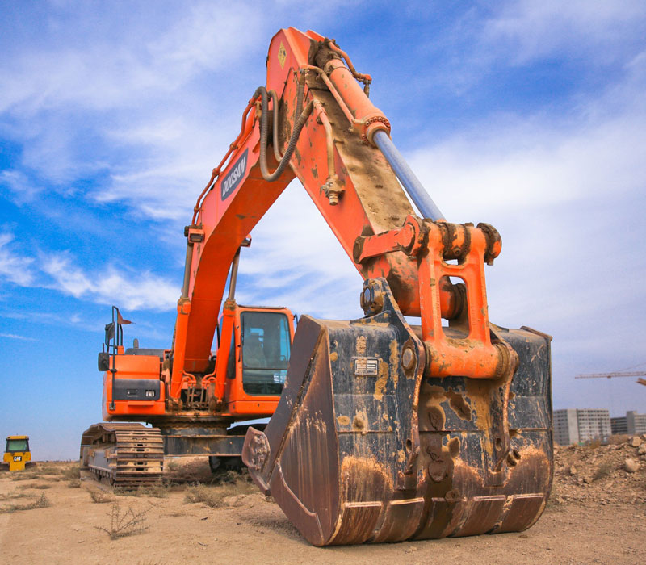

Создаём и воплощаем в реальность
- Наша компания работает по всему миру и воплощает ваши идеи в реальность
- Мы видим свою миссию в качественном строительстве объектов промышленного назначения в срок и в рамках бюджета с целью обеспечения долгосрочной эксплуатации и высокой степени надежности.
- По поводу планов дома ,каталогов и вопросов обращайтесь к администратору он всё вышлет в wutsup

Для нас важно:
- Честность и открытость.
(Мы уверены, что прозрачность коммуникаций – основа доверия к компании. Мы стремимся максимально устранить информационные барьеры между нами и нашими клиентами, быть открытыми и понятными, слышать нашего покупателя и давать обратную связь.)
- 2.Ответственность за результат.
(Строить качественно и в срок – принципиальная позиция СК «СтройБат» с первых дней основания компании. Мы постоянно работаем над совершенствованием проектных и технических, чтобы создавать комфортные дома, эстетически и технически отвечающие потребностям горожан на долгие годы вперед.)
- 3.Команда профессионалов.
(Мы понимаем ценность каждого нашего сотрудника. За годы работы в «Стройбате» сложилась команда профессионалов, которой сегодня под силу любые поставленные задачи..)